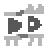

Merge AU
Table of Contents
Character Species
Baba
Lifespan 60-70yo
Height 1'5" - 1'7"
Mature at ~17yo
Small, fuzzy creature. Roughly pig-shaped.
Has sexual dimorphism - male sex is white, female sex is cyan. Transgender Babas usually dye it out.
Keke
Lifespan 70-75yo
Height 3'4" - 3'8"
Mature at ~23yo
Bean-shaped, red creature. Bipedal.
Me
Lifespan 90-100yo
Height 2'5" - 3'1"
Mature at ~27yo
Also bean-shaped and bipedal, but more purple and flat near the bottom.
Fofo
Lifespan 400-450yo
Height 2'1" - 9'10", known to exceed these bounds
Mature at 0yo
Plant creature, sprouts from the ground.
Jiji
Lifespan 40-45yo with modern medicine, 15-17yo in the wild
Height 7'8" - 9'2"
Mature at ~3yo
Orange, giraffe-like horse-like creature. Quite large. Short lifespan, grows up fast.
It
Lifespan Potentially immortal
Height Inconsistent, average around 3'8"
Mature at Whenever large enough to mitose
Cyan slime creature. Has no concept of gender.
Important Characters
Balt 
Pronouns they/them
Sex undefined
Age 19
Height 1'3"
Species Half-Baba but also kind of not, you'll see
Gale
Pronouns it/she
Sex Intersex
Age 14
Height 8'10"
Species Jiji
Used to work in a lab. Ball of anxiety and self-doubt.
The Supervisor
Pronouns he/him
Sex Male
Age 162
Height 6'7"
Species Fofo
The lab supervisor. Old-fashioned, with some dated beliefs. Never liked Gale.
Backstory
It was a regular day at the lab. Gale was testing out a new word they'd recently synthesized, .
This word had the peculiar property of creating entirely new objects by combining other objects!
This kind of behavior had never been seen before in a property, so the supervisor was quick to try to capitalize on it.
The lab had gotten access to a baba cadaver recently, who had donated their body to science.
It was getting late, and Gale didn't want to set up the proper rule, so a quick on it would be fine, right?
Just had to be careful...
Gale bangs its neck on the cabinet. A belt falls from the top shelf. Uh-oh.
A voice comes from the baba - or, what used to be a baba? "Huh? Where am I?"
Gale is stunned. Had she just revived someone from the dead? No, that's impossible, the belt wasn't alive!
"Hey! What's going on? Where am I? What am I? Why can't I remember anything?"
Gale hits the panic button, shutting off all rules in the vicinity. Big mistake.
A guard enters the room and is stunned. Gale tries to explain, but before it can get a sentence out, the new creature stands up.
"Okay, judging by your lab coat, that rule, the fact that there's a ton of random shit on the ground next to me, and among that is a cadaver tag for a baba...
did you just fuck up a lab experiment?"
Gale eeks out a slight "...yeah."
"Hah, no shit! You basically saved my life, thank y-"
The guard shoots them with a tranquilizer. It bounces off the metal.
"Look, we can't let this get to the public. It has to go. It's standard procedure."
"Why!? Balt just got a second chance at life-"
"That abomination is not alive. Don't make this harder than it has to be."
"Why wouldn't they be alive? Give them a chance, please!"
"Something that fucked-up looking can't be. My god wouldn't allow it."
"Of course it circles back to your god. You know there's more than one pea in a pod?"
"...hand over your name tag. I'm done with you and your woke ideas."
"Wh- You can't just do that! It's against state law!"
"TAG. ON MY DESK. OUT THE DOOR. NOW."
"...fine. Fine. You know what? Fine. Go ahead and commit murder for the sake of some 'cover-up'. Fuck you."
With a huff, Gale exits the supervisor's office and gathers its things.
Gale gets home. A tiny apartment - this job never paid that well anyway, surely she can find a better place to apply her skills.
They weren't an abomination. They were alive, just like her. They were a person, just like her.
Getting out of the shower, Gale notices something in the mirror. Maybe it was a trick of the light, but it could've sworn it saw the arrow of a belt.
Gale can't sleep. It feels like it's being watched. She's not afraid of the dark, she grew out of that!
...something moved. Something fucking moved. What the fuck. That's Balt. What's going on. Is it dreaming? It has to be, this can't be real. Why can't she wake up? Its eyes are already open. This is real. Oh gods. It's going insane. There's no way. She's hallucinating. No. No. No. What? How? How is this real? They died in the lab! It saw them get incinerated! How are they alive? They're not, they're a ghost! But ghosts aren't real! She knows ghosts aren't real! They're just some fairytale, some coping mechanism-
"...Gale?"
It freezes in place.
"Oh thank the gods I finally got through to you."
This is real. They're real.
"Look, I know it's late, but I can't stay without a body like this. I saw you have a 3D printer-"
Gale bolts out of bed. It's 3:40 AM. It doesn't care. This is too important. It opens Blender and starts sculpting.
"How did it feel having a 3D-printed body?"
"Bad. The plastic kept grating against itself and made it really fucking hard to walk. I am VERY glad to have this metal one now, hah."
"Do you plan on pressing charges against the-"
"Yes. Fuck yes. Do you realize how traumatic being put through a fucking car crusher is? That shit hurts. I had fucking nightmares about that for months. I mean, fuck, I still get nightmares. Those lab shitheads need to go to jail. Full fucking stop. "
"Hey, cool it on the language, please. We're on air."
"Sorry. Just... a touchy topic."
"Did the lab fire you because of your gender?"
"No comment."
"Can you see other ghosts?"
"No, again, I'm only a half-ghost. I can tell they're there, but I can't see anyone."
"Do you remember what life was like before this happened to you?"
"Nope, nothing. It's completely blank. From what I hear, though, it's probably for the best."
"What's your plan for a new job?"
"Electronics engineering."
"What's your plan?"
"Fuck if I know. I don't need to eat, or be warm, or anything that costs money, so I'm in no rush."
"And we're out of time. Thank you to Gale and Balt for coming to this exclusive interview, on PRTV News, channel 7. Now, the weather."
Side Characters and Events
Sunbad
Due to yet another rule experiment gone wrong, somehow, in some way, a Badbad who was ended up getting teleported into the core of the sun...
...and merged with it.
© baltdev 2025